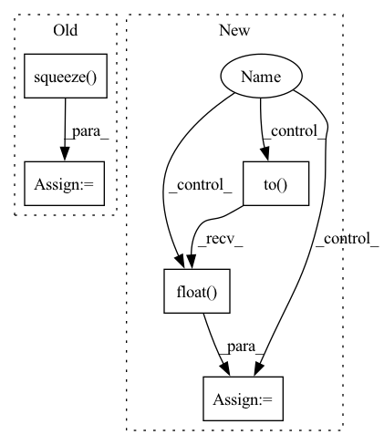

Pattern ID :18300

Before Change
pred = model(
torch.autograd.Variable(batch).to(device), lengths.cpu().numpy()
) //// perform forward pass
pred = torch.squeeze(pred)
loss = criterion(
pred.to(device), torch.autograd.Variable(targets.float()).to(device)
) //// compute loss
pred_val = pred >= 0.5 //// get predictions
y_true += list(targets.int())
y_pred += list(pred_val.data.int().detach().cpu().numpy())
total_loss += loss
After Change
sents2_len,
targets,
_,
_,
) in data_loader["val_loader"]:
//// perform forward pass
pred = model(
sent1.to(device),
sent2.to(device),
sents1_len.to(device),
sents2_len.to(device),
)
//// compute loss
loss = criterion(
pred.to(device), torch.autograd.Variable(targets.float()).to(device)
)
y_true += list(targets.float())
y_pred += list(pred.data.float().detach().cpu().numpy())
total_loss += loss
//// computing accuracy using sklearn"s function
acc = r2_score(y_true, y_pred)
In pattern: SUPERPATTERN
Frequency: 3
Non-data size: 5
Instances
Fragment ID: 59953458
Project Name: shahrukhx01/siamese-nn-semantic-text-similarity
Commit Name: f3d054dd14ef532c408b1306c3341115777ac22f
Time: 2021-12-30
Author: sk28671@gmail.com
File Name: siamese_sts/trainer/train.py
M Class Name: AnonimousClass
N Class Name: AnonimousClass
M Method Name: evaluate_dev_set(5)
N Method Name: evaluate_dev_set(5)
M Parent Class:
N Parent Class:
M File Name: siamese_sts/trainer/train.py
N File Name: siamese_sts/trainer/train.py
M Start Line: 78
M End Line: 95
N Start Line: 91
N End Line: 116
'>
Before Change
pred = model(
torch.autograd.Variable(batch).to(device), lengths.cpu().numpy()
) //// perform forward pass
pred = torch.squeeze(pred)
loss = criterion(
pred.to(device), torch.autograd.Variable(targets.float()).to(device)
) //// compute loss
loss.backward() //// perform backward pass
optimizer.step() //// update weights
pred_val = pred >= 0.5 //// get predictions
y_true += list(targets.int().numpy()) //// accumulate targets from batch
y_pred += list(
pred_val.data.int().detach().cpu().numpy()
) //// accumulate preds from batch
total_loss += loss //// accumulate train loss
After Change
sents2_len,
targets,
_,
_,
) in dataloader["train_loader"]:
model.zero_grad()
//// perform forward pass
pred = model(
sent1.to(device),
sent2.to(device),
sents1_len.to(device),
sents2_len.to(device),
)
//// compute loss
loss = criterion(
pred.to(device), torch.autograd.Variable(targets.float()).to(device)
)
//// perform backward pass
loss.backward()
//// update weights
optimizer.step()
//// accumulate targets from batch
y_true += list(targets.float().numpy())
//// accumulate preds from batch
y_pred += list(pred.data.float().detach().cpu().numpy())
//// accumulate train loss
total_loss += loss
'>
Fragment ID: 59953459
Project Name: shahrukhx01/siamese-nn-semantic-text-similarity
Commit Name: f3d054dd14ef532c408b1306c3341115777ac22f
Time: 2021-12-30
Author: sk28671@gmail.com
File Name: siamese_sts/trainer/train.py
M Class Name: AnonimousClass
N Class Name: AnonimousClass
M Method Name: train_model(6)
N Method Name: train_model(6)
M Parent Class:
N Parent Class:
M File Name: siamese_sts/trainer/train.py
N File Name: siamese_sts/trainer/train.py
M Start Line: 16
M End Line: 47
N Start Line: 16
N End Line: 59
'>
Before Change
pred_mask_vis = colorize_semseg(pred_mask, num_classes=SYNPICK_CLASSES) // [T, 3, h, w]
frames_colorized = colorize_semseg(postprocess_mask(frames_seg.squeeze()), num_classes=SYNPICK_CLASSES).unsqueeze(dim=0) // [1, T, 3, h, w]
frames_colorized_vis = postprocess_img(frames_colorized.squeeze(dim=0)) // [T, 3, h, w]
input_colorized = frames_colorized[:VIDEO_IN_LENGTH]
colorized_then_pred = pred_colorized_mask_model.pred_n(input_colorized, pred_length=VIDEO_PRED_LENGTH)
After Change
iter_loader = iter(test_loader)
with torch.no_grad():
for i in tqdm(range(10)):
frames = next(iter_loader).to(DEVICE) // [1, T, 3, h, w]
frames_vis = postprocess_img(frames.squeeze(dim=0)) // [T, 3, h, w]
input = frames[:, :VIDEO_IN_LENGTH] // [1, t, 3, h, w]
pred_rgb = pred_rgb_model.pred_n(input, pred_length=VIDEO_PRED_LENGTH)
pred_rgb = torch.cat([input, pred_rgb], dim=1) // [1, T, 3, h, w]
pred_rgb_vis = postprocess_img(pred_rgb.squeeze(dim=0)) // [T, 3, h, w]
pred_rgb = torch.stack([seg_model(pred_rgb[:, i]) for i in range(pred_rgb.shape[1])], dim=1)
pred_rgb = pred_rgb.argmax(dim=2).squeeze() // [T, h, w]
pred_then_colorized_vis = colorize_semseg(postprocess_mask(pred_rgb), num_classes=SYNPICK_CLASSES).transpose(0, 3, 1, 2) // [T, 3, h, w]
frames_seg = torch.stack([seg_model(frames[:, i]) for i in range(frames.shape[1])], dim=1).argmax(dim=2) // [1, T, 1, h, w]
frames_seg_in = torch.stack([(frames_seg == i) for i in range(SYNPICK_CLASSES)], dim=2).float() // [1, T, c, h, w] one-hot float
input_seg = frames_seg_in[:, :VIDEO_IN_LENGTH] // [1, t, c, h, w]
pred_mask = pred_mask_model.pred_n(input_seg, pred_length=VIDEO_PRED_LENGTH).argmax(dim=2) // [1, n, 1, h, w]
pred_mask = torch.cat([input_seg.argmax(dim=2), pred_mask], dim=1).squeeze() // [T, h, w]
'>
Fragment ID: 59953444
Project Name: ais-bonn/vp-suite
Commit Name: 13016d4ab8ba4f8e7ee087155a6c5171f4d00ba3
Time: 2021-08-02
Author: boltres@ais.uni-bonn.de
File Name: scripts/visualize_4_way.py
M Class Name: AnonimousClass
N Class Name: AnonimousClass
M Method Name: visualize_4_way(1)
N Method Name: visualize_4_way(1)
M Parent Class:
N Parent Class:
M File Name: scripts/visualize_4_way.py
N File Name: scripts/visualize_4_way.py
M Start Line: 16
M End Line: 73
N Start Line: 17
N End Line: 74